Our Approach

Building value through
dedication, experience, and innovation.
dedication, experience, and innovation.
The Scientific Group Difference is solidly based on the collaboration of all fourteen companies. Building on each others strengths, our matrix of companies work together to create boundless solutions for all of your needs.
#406 of Inc Magazines 5000#406 Fastest Growing Private Companies in Amerca
#53 of Inc. Magazines Regionals Northeast 2024 Fastest Growing Companies
We are honered to be among the Inc. magazine regional list which represents the most successful companies within the Northeast economy’s most dynamic segment– independent small businesses.
Read MoreExceeding Customer Expectations
To Scientific, exceeding customer expectations is easy. This is achieved through a comprehensive understanding of our client’s operating conditions and environment, and an appreciation for the welfare of the owners, employees and patrons located at our client facilities. This perspective results in a commitment we make to each client at the start of our relationship, and is supported with a host of documentation and procedures evident before, during and after each service.
Proactive Problem Solving
Proactive problem solving is not as easy to impress upon our clients because we strive to take measures, when on site, to deal with issues encountered before they ever become problems. Our clients learn to appreciate this when they see a drastic drop in problems following Scientific’s first service.
Gaining Client Trust
When a problem is identified, Scientific is there at our clients’ side to immediately resolve the matter. There are countless incidences where the problems were identified by Scientific upon earlier visits, but not as yet dealt with by the client per our prior recommendations. For us, in these situations, it’s not about the “I Told You So,” but it’s about gaining client trust and translating that into reliability for a long lasting relationship.
The Scientific Difference
There is no other competitor in our market that can boast the class of clientele, the sheer number of facilities under management, years of resident expertise on staff and strict industry standards to which we abide.